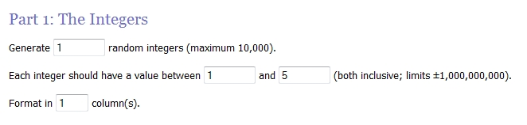
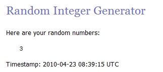

Logitech konkursas
modding.lt kartu kompanija Logitech, tiksliau, su kompanijos oficialiais atstovais Lietuvoje "Komunikacija ir Konsultantai", organizuoja konkursą, kurio metu galėsite laimėti Logitech pelytę. Tam jums tereikės atsakyti į kelis paprastus klausimus (su pateiktais atsakymų variantais). Visą informaciją, reikalingą teisingiems atsakymams atrinkti, rasite mūsų bei Logitech tinklapiuose. Konkursas vyks savaitę, kitą ketvirtadienį (2010-04-22) burtų keliu bus išrinktas teisingai į klausimus atsakęs laimingasis, kuriam atiteks "Komunikacija ir Konsultantai"
įsteigtas prizas.
Užduotis
Atsakykite į žemiau pateiktus klausimus bei atsakymus atsiųskite mums. Jūsų laiškas turi atitikti žemiau pateiktas Taisykles. Taigi - klausimai:1. Su keliais įrenginiais vienu metu gali dirbi Logitech® Unifying 2.4 GHz USB imtuvas?
a) 10
b) 2
c) 6
2. Kuo yra ypatingas Logitech Performance Mouse MX ratukas?
a) Greito prasukimu galimybe (hyper-fast scrolling).
b) Ratukas yra pagamintas iš aliuminio-vario lydinio.
c) Visas ratuko paviršius yra padengtas guma.
3. Ant kokio minimalaus storio stiklo gali veikti Logitech Performance Mouse MX pelytė?
a) 3 mm
b) 4 mm
c) 5 mm
4. Kokiu rankos judesiu (gestu), galima perjungti dainas (next/previous track), naudojantis MX Air pelyte?
a) Nubrėžus ore maža apkritimą pelės nosimi.
b) Pavertus pelytę į kairį arba į dešinį šoną.
c) Pakračius aukštyn ir žemyn.
5. Ar Logitech gamina sekimo ir stebėjimo sistemas?
a) Taip.
b) Ne.
Taisyklės
- vienas dalyvis konkurse dalyvauja vieną kartą
- laiško pavadinimas "Logitech Konkursas"
- klausimai turi būti atsakyti pilnai, t.y. pateikti ne tik atsakymo raidiniai variantai, bet ir pats atsakymas (pvz.: 1. a) Hiperbolinis Paraboloidas)
- laiške nurodykite savo vardą, pavardę, miestą iš kurio esate bei telefono numerį (jei turite)
- atsakymų laukiame adresu ext@modding.lt iki 2010.04.21 24:00
- jei esate ne iš Vilniaus, prizo persiuntimo pašto išlaidas apsimokate patys
Rezultatai
2010.04.21 24:00 laiškų su atsakymais priėmimas bus sustabdytas. Penktadienį (2010.04.22) modding.lt tinklapyje bus paskelbtas konkurso nugalėtojas, kuris bus išrinktas burtų keliu iš visų teisingai į pateiktus klausimus atsakiusiųjų dalyvių.Prizas

Konkurso aptarimas modding.lt forume.
Suvestinė
Ilgai netruko, o konkursas ėmė ir pasibaigė. Sulaukėme tik (o gal net) 15 dalyvių, iš kurių tik vienas sugebėjo atsakyti į klausimus nesilaikydamas nustatytų taisyklių. Keista, bet klausimai sukėlė nelauktų keblumų ir tik 5 dalyviai iš 15, neskaitant to, kuris nesilaikė atsakymų pateikimo taisyklės, sugebėjo į visus klausimus atsakyti teisingai.
Statistiškai, daugiausia bėdų buvo dėl 4 klausimo: "Kokiu rankos judesiu (gestu), galima perjungti dainas (next/previous track), naudojantis MX Air pelyte?" Daugiau kaip pusė suklydusių manė, kad šiam veiksmui atlikti reikia pelytę paversti į kairę arba į dešinę (atsakymas b). Tačiau teisingas atsakymas buvo a) Nubrėžus ore maža apkritimą pelės nosimi. Cituoju oficialų Logitech MX Air galimybių aprašymą, kurį kiekvienas galėtoje labai lengvai susirasti internete: "..skipping to the next or previous track can be done by making a small circle in the air with the nose of the mouse."
Pakišo koją ir klausimas Logitech® Unifying imtuvą. Keli žmonės manė, kad imtuvus gali dirbi vos su 2 įrenginiais, nors iš tikro, su šešias. Į, mano nuomone, patį lengviausią klausimą "5. Ar Logitech gamina sekimo ir stebėjimo sistemas?" net du žmonės atsakė neigiamai. Negi taip sunku buvo pasižiūrėti Logitech gaminamų produktų sąrašą?
Kai kas 2. klausimui "Kuo yra ypatingas Logitech Performance Mouse MX ratukas?" parinko atsakymą "c) Visas ratuko paviršius yra padengtas guma", kuris tikrai nėra teisingas. Reikėjo atkreipti dėmesį į žody "visas" šiame atsakymo variante. Pelės ratukas tikrai nėra visas padengtas guma. Teisingas atsakymas buvo " a) Greito prasukimu galimybe (hyper-fast scrolling)."
Džiugu, kad į klausimą "3. Ant kokio minimalaus storio stiklo gali veikti Logitech Performance Mouse MX pelytė?" Visi dalyviai atsakė teisingai. Tikiuosi, kad atsakymą "b) 4 mm" pastūmėjo pasirinkti Logitech Performance Mouse MX pelytės aprašymas, patalpintas mūsų tinklapyje.
Nugalėtojas
Taigi, tik 5 dalyviai iš 15 praėjo į konkurso finalą, t.y. į visus klausimus atsakė teisingai. Norėdamas nusiimti laimėtojo išrinkimo atsakomybę nuo savo pečių, pasitelkiau į pagalbą random.org internetinį atsitiktinių skaičių generatorių. Teisingai atsakiusius sunumeravau nuo 1 iki 5 pagal atsakymo atsiuntimo laiką. Nustačiau random.org sveikujų skaičių generatorių pagal savo poreikius:
Ir štai.. (dėmesio, būgnai ir fanfaros!!!) rezultatas:

Sveikinu Gytį K. iš Vilniaus, laimėjusį Logitech M100 pelytė, kurią įsteigė "Komunikacija ir Konsultantai". Aš, savo ruožtu, visiems labai dėkoju už dalyvavimą, linkiu nenusiminti nelaimėjusiems. Jei skaitote modding.lt, žinote, kad konkursų ir prizų čia būna – laimėsite kitą kartą!


{kind=link}